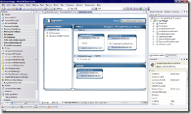

Finally it's out - the successor of Smart Client Software Factory and Composite UI Application Block is released in a first CTP. Since September 2006 I've been waiting for that moment - that was the time when I saw the first version of Acropolis and it's little :) Domain Specific Language in action for the first time.
You'll find more information on the following blogs (including a statement of the Patterns & Practices Team which will release a migration guidance for CAB/SCSF based applications to Acropolis).
http://blogs.msdn.com/dphill/archive/2007/06/05/introducing-acropolis.aspx
{kind=link}
http://blogs.msdn.com/gblock/archive/2007/06/06/acropolis-the-future-of-smart-client.aspx
http://windowsclient.net/Acropolis/Default.aspx
For all of you using CAB/SCSF right now or planning a composite Smart Client which needs to be finished soon: don't get nervous, the final release of Acropolis will take some time for sure:)
My personal opinion is: if you need such a framework now, then use CAB/SCSF before writing your own framework. Second: no one will force you to upgrade to Acropolis. And third: if you want to upgrade to Acropolis, the Microsoft Patterns & Practices Team will provide a step-by-step upgrade guidance.
An official statement from the Patterns & Practices Team has been released, already, where they state, that they will continue support CAB/SCSF and that they will provide an upgrade guidance created together with the Acropolis team here...
For me it means in any case - I'll start working with Acropolis right now and if you need someone to discuss I'll be available:)